Safaa Mouline
Intro
Text placeholder.
Part 0: The Setup
Reflect on the quality of the outputs and their relationships to the text prompts...
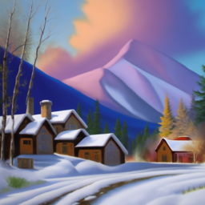
10 Steps Output 0
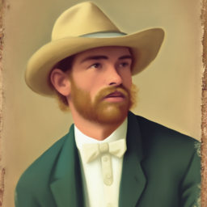
10 Steps Output 1
10 Steps Output 2
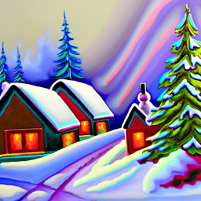
20 Steps Output 0
20 Steps Output 1
20 Steps Output 2
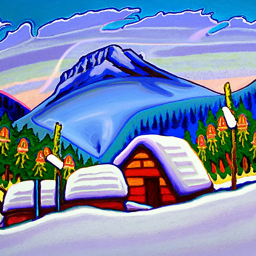
100 Steps Output 0
100 Steps Output 1
100 Steps Output 2
1.1: The Forward Process
Explanation placeholder.
Campanile Resized
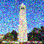
Noised at Step 250
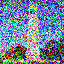
Noised at Step 500
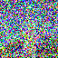
Noised at Step 750
1.2: Classical Denoising
Explanation placeholder.
Noised Image Step 250
Noised Image Step 500
Noised Image Step 750
Gaussian Denoised Step 250
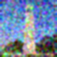
Gaussian Denoised Step 500
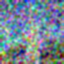
Gaussian Denoised Step 750
1.3: One Step Denoising
Explanation placeholder.
Original Image
Noised Step 250
Noised Step 500
Noised Step 750
One Step Denoising at 250
One Step Denoising at 500
One Step Denoising at 750
1.4: Iterative Denoising
Explain placeholder
Iterative at Step 90
Iterative at Step 240
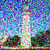
Iterative at Step 390
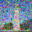
Iterative at Step 540
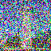
Iterative at Step 690
Campanile Resized
Iterative Denoised
One Step Compare
Gaussian Compare
1.5: Diffusion Model Sampling
Explain placeholder
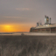
Sample 1
Sample 2
Sample 3
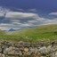
Sample 4
Sample 5
1.6: Classifier Free Guidance (CFG)
Explain placeholder
CFG Sample 1
CFG Sample 2
CFG Sample 3
CFG Sample 4
CFG Sample 5
1.7: Image-to-image Translation
Explain placeholder
SDEdit i_start = 1
SDEdit i_start = 3
SDEdit i_start = 5
SDEdit i_start = 7
SDEdit i_start = 10
SDEdit i_start = 20
Campanile
SDEdit i_start = 1
SDEdit i_start = 3
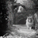
SDEdit i_start = 5
SDEdit i_start = 7
SDEdit i_start = 10
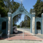
SDEdit i_start = 20
Sather Gate
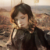
SDEdit i_start = 1
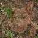
SDEdit i_start = 3
SDEdit i_start = 5
SDEdit i_start = 7
SDEdit i_start = 10
SDEdit i_start = 20
Doe
1.7.1: Editing hand-drawn and web images
Explain placeholder
Mona at i_start = 1
Mona at i_start = 3
Mona at i_start = 5
Mona at i_start = 7
Mona at i_start = 10
Mona at i_start = 20
Mona Resized
Flower at i_start = 1
Flower at i_start = 3
Flower at i_start = 5
Flower at i_start = 7
Flower at i_start = 10
Flower at i_start = 20
Flower Drawn
Snowflake at i_start = 1
Snowflake at i_start = 3
Snowflake at i_start = 5
Snowflake at i_start = 7
Snowflake at i_start = 10
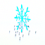
Snowflake at i_start = 20
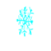
Snowflake Drawn
1.7.2: Inpainting
Explain placeholder
Campanile Resized
Campanile Mask
Campanile Replace
Campanile Inpainted
Sather Gate Resized
Sather Mask
Sather Replace
Sather Inpainted
Doe Resized
Doe Mask
Doe Replace
Doe Inpainted
1.7.3: Text-conditional image-to-image translation
Explain placeholder
Image to Image 1
Image to Image 3
Image to Image 5
Image to Image 7
Image to Image 10
Image to Image 20
Campanile Resized
Sather 1
Sather 3
Sather 5
Sather 7
Sather 10
Sather 20
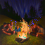
Final Illusion
Flipped Image
Snowy Old Man
Flipped Image
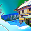
Snow Coast
Flipped Image
1.9: Hybrid Images
Explain placeholder
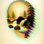
Waterfall Skull
Snowy Skull
Snowy Coast Hybrid
1.7.1: Editing hand-drawn and web images
Explain placeholder
1.7.2: Inpainting
Explain placeholder
1.7.3: Text-conditional image-to-image translation
Explain placeholder
1.8: Visual Anagrams
Explain placeholder
1.9: Hybrid Images
Explain placeholder